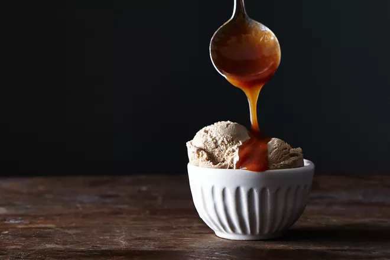

Real Caramel Sauce

Gooey caramel sauce
A delicious, simple caramel sauce.
Ingredients
- 1 cup golden syrup or light corn syrup
- 2 cups sugar
- 3/8 teaspoon salt
- 2 cups heavy cream
- 3 tablespoons butter
- 1 tablespoon vanilla extract
Steps
- Combine the syrup, sugar, and salt in a heavy 3-quart saucepan. Cook over medium heat, stirring with a silicone spatula or wooden spoon, until the mixture simmers around the edges.
- Wash the sugar and syrup from the sides of the pan with a wet pastry brush. Cover and cook for 3 minutes. (Meanwhile, rinse the spatula or spoon for use again later.) Uncover the pan and wash down the sides once more.
- Attach the candy thermometer to the saucepan, without letting it touch the bottom of the pan, and cook, uncovered, without stirring until the mixture reaches 305° F. Meanwhile, heat the cream in a small saucepan until tiny bubbles form around the edges of the pan. Remove the pan from the heat and cover it to keep the cream hot. When the sugar mixture is at 305° F, remove it from the heat and stir in the butter chunks.
- Gradually stir in the hot cream; it will bubble up and steam dramatically. Put the pan back on the burner and adjust the heat so that the mixture boils energetically but not violently. Stir until smooth. Continue to cook, stirring occasionally, to about 225° F (or 228° F for a sauce that thickens like fudge when poured over ice cream). Remove the pan from the heat and stir in the vanilla.
- Serve the sauce warm or hot. Store in the refrigerator (it keeps for ages) and reheat it gently in the microwave or a saucepan just until hot and flowing. You can stir in rum or brandy to taste. If the sauce (after reheating) becomes too thick or stiff to serve over ice cream, it can always be thinned with a little water or cream.